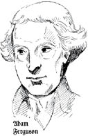
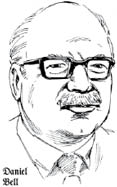
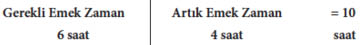
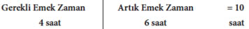
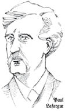
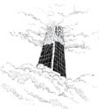
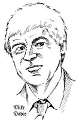

Bölüm 5

KAPİTALİST SİSTEMDE ÇALIŞMA
Marx’ın işe meta ile başladığını biliyoruz. Ardından çözümlemeye mübadele ve dolaşım ile devam ettiğini, sonunda emek gücünün satın alınmasına geldiğini biliyoruz. Her aşamada (kullanım değeri ile mübadele değeri arasında olduğu gibi) çelişkiler ve (değer nedir? nereden gelir? gibi) gizemlilikler bulmuştur. Bütün bu çelişkilerin işin merkezindeki kaynağı, emek gücünün metaya dönüşmesidir.
Kapitalist, iş gününü mümkün olduğu kadar uzatır ve mümkünse bir iş gününden iki iş günü çıkarmaya çalışırken, alıcı olarak buna hakkının olduğunu iddia eder. Diğer yandan, satılmış olan metanın özgül doğası bunun alıcısı tarafından tüketimine bir sınır koyar ve işçi, iş gününü belli bir normal büyüklükle sınırlamak isterken, satıcı olarak buna hakkının olduğunu iddia eder. Demek ki, burada, her ikisi de meta mübadelesi yasasının damgasını taşıyan iki hak arasındaki bir çatışkıyla karşı karşıya kalıyoruz. Eşit haklar arasında son sözü kuvvet söyler. Ve böylece, kapitalist üretim tarihinde iş gününün standartlaştırılması, kendisini iş gününün sınırlarının belirlenmesi mücadelesi olarak ortaya koyar; bu, toplam kapitalistle, yani kapitalistler sınıfıyla toplam işçi ya da işçi sınıfı arasındaki bir mücadeledir.
Marx, Kapital, s. 231-232
İşte tipik Marx. Burjuva ya da kapitalist iktisadın ilkelerini, burada özel mülkiyet haklarını ele alıp içlerinde çözülemez çelişkiler yakalar. Emek gücü dediğimiz metanın kendine özgü niteliği, satıldıktan sonra bile bireysel işçiden ayrılmamasıdır. Emek gücü bir limon gibi sıkılıp şişeye konurken satıcı (işçi) gidip keyfine bakamaz.
Mülkiyet hakları arasındaki bu çelişki ancak kuvvet kullanılarak çözülebilir. Uygulamada da böyle olmaktadır. Kapitalizmin elinin altında iktisadi güç, siyasal güç, yasal güç ve elbette polis, hatta ordu aracılığıyla fiziksel güç bulunmaktadır.
Sözgelimi Marx’ın zamanında Fransız ordusu, Paris Komünü denen işçinin denetimi ele alma denemesini sona erdirmek için 1871’de Fransız işçilerini katletmiştir. Latin Amerika’nın 20. yüzyıl tarihi, ordu yönetime el koyup işleri yürütürken işçilerle köylülerin kapitalist sınıfın merhametine terk edilmesinin tarihidir.
Marx yetişkin yaşamının çoğunu, ilk büyük sanayi devriminin anayurdu ve kapitalist gelişmenin dev merkezi olan İngiltere’de sürgünde geçirmiştir. Bu yüzden işgünü çevresinde kopan gürültülerin somut örneklerine bakmak isteyince doğal olarak 19. yüzyıl ortalarının İngiliz tarihine dönmüştür.
Parlamento’nun kurduğu Fabrika Teftiş Dairesi’nin raporları İngiliz işçilerinin yaşam koşullarının tanıklığını yapmaktadır. Bu raporlar, seramik sanayiindeki yetişkin işçilerin fiziksel olarak çöktüklerini, hastalıklara, illetlere yakalandıklarını, sakatlandıklarını ve ömürlerinin kısaldığını göstermektedir.
Kibrit yapımı 19. yüzyıl ortalarından başlayarak gelişen bir sanayidir. Çoğu çocuk olan işçiler arasında, uzun süreler fosforla iş görmeleri nedeniyle tetanos yaygındı.
Bu iş kolunu görmüş olsaydı, Dante, kendi en dehşet verici cehennem tasvirlerini geride bıraktığını düşünürdü.
Marx, Kapital, s. 243
Victoria dönemi Britanya’sında çocuk emeği çok yaygındı. Marx, günde 15 saat çalıştırılan 7 yaşındaki çocukların ayrıntılı anlatıldığı raporlardan alıntılar yapar.
Bugün çocuk emeği, çoğunlukla kayıt dışı ekonomide ya da ev hizmetlerinde olmak üzere, genellikle küresel markalı malları üreten kapitalist imalat sanayilerinde hâlâ yaygındır. Son yıllarda Nike, Gap, Apple gibi markaların taşeron firmalarının çocuk işçi çalıştırdıkları ortaya çıkmıştır.
Sermaye, vampir gibi ancak canlı emeği emerek hayatta kalan ve ne kadar fazla canlı emek emerse o kadar uzun yaşayan ölü emektir. İşçinin çalışarak geçirdiği zaman, kapitalistin satın almış olduğu emek gücünü tükettiği zamandır.
Marx, Kapital, s. 230
Marx’ın bize söylediğine göre 19. yüzyıl ortalarında fırıncılar öylesine aşırı çalışıyordu ki, pek azı 42 yaşına kadar yaşayabiliyordu. Demirciler de aşırı çalışmaya dayanamayıp erken yaşta ölüyordu.
Sermaye, bunu elde etme hedefine, emek gücünün yaşam süresini kısaltarak varır; tıpkı, açgözlü bir çiftçinin daha fazla ürün almak için toprağın verimliliğini sömürmesi örneğinde olduğu gibi.
Marx, Kapital, s. 260
Uzun çalışma saatleri ve gece mesaisi hem yetişkinler hem çocuklar arasında yaygındı. İş koşulları tehlikeliydi, yaşamı tehdit ediyordu. İşçi sınıfı değişiklik isteğiyle galeyana geliyordu. Devletin işe el koyması gereği açıktı. Böylece 1833-1864 arasında çıkarılan bir dizi Fabrika Yasası sermayeyi dizginlemeye çalıştı.
Bu yasalar sermayenin ölçü tanımayan emek yutma azgınlığını, iş gününün devlet tarafından zorla sınırlandırılması yoluyla dizginler; üstelik bu devlet, kapitalistlerin ve büyük toprak sahiplerinin egemenlikleri altında bulunan bir devlettir.
Marx, Kapital, s. 235
Ancak fabrika müfettişlerinin sayısı yasaları lâyıkıyla uygulatmaya yetmeyecek kadar azdır, üstelik yasayı çiğneyen kapitalistlerin gördükleri ceza, yakalanma riskini göze aldıracak kadar küçüktür. Marx’ın dediği gibi, kapitalizmi düzene sokmaya çalışanın kapitalist bir devlet olduğunu unutmayın, bu biraz da çiftliğe yapılan gece baskınlarını düzenleme işinin kurtlara bırakılması gibidir.
Marx’ın zamanındaki cezaların etkisizliği 150 yıl sonra da hâlâ geçerlidir. Bugün şirketler, yasal cezaları çalışma maliyetinin üstlenilebilir bir parçası olarak görüp rutin biçimde hesaba katmaktadır.
Sözgelimi 2009’da müfettişler ABD madencilik sanayiine 173.926 kez yasalara aykırı davrandığı için toplam 141 milyon $ ceza kesmiştir. Bunun bir yarar oldu mu? Hayır, 2010’da Massey madencilik şirketi Batı Virginia maden ocaklarında güvenlik kurallarını 123 kez çiğnemiştir. Kısa bir süre sonra oradaki bir yeraltı patlamasında 29 madenci ölmüştür.
Çalışma koşullarını daha güvenli hale getirmek yatırım ister, o da maliyet demektir. Güvenlik denetimi zamana mal olur, bildiğimiz gibi o da yine paradır. İşte size sermayenin iş güvenliği kültürüne karşı olmasının nedeni.
Aşırı çalıştırma, o zaman olduğu gibi şimdi de kazalara yol açıyor.
Büyük bir tren kazası yüzlerce yolcuyu öbür dünyaya göndermişti. Kazanın nedeni demiryolu işçilerinin ihmalidir, deniliyordu. Jüri önüne çıkarılan bu üç kişi bir ağızla konuştular ve 10-12 yıl önce günde sadece 8 saat çalıştırılmakta olduklarını söylediler. Son 5-6 yıldır işe 14, 18 ve 20 saat mıhlandıklarını ve özellikle, gezi trenlerinin işletildiği dönemlerde olduğu gibi, tatil heveslilerinin akın ettiği zamanlarda, sık sık, aralıksız 40-50 saat çalışmak zorunda kaldıklarını anlattılar. Onlar da herkes gibi insandı, dev değillerdi. Bir noktada emek güçleri tükenirdi. Uyuşukluğa teslim olurlardı. Kafaları çalışmaz, gözleri görmez olurdu. Tümüyle “respectable British Juryman” (saygın İngiliz jüri üyesi), bu işçileri “manslaughter” (insan katliamı) suçlamasıyla bir üst mahkemeye sevk eden bir kararla cevap verdi; kararın yumuşak üsluplu ekinde, demiryollarını işleten sermaye babalarının, bundan böyle, gerekli sayıda “ emek gücü” alınmasında daha eli açık, satın alınan emek gücünü kullanırken “daha ölçülü” ya da “ daha özverili” ya da “daha tutumlu” olmaları kutsal dileğini ifade etti.
Marx, Kapital, s. 248-249
Bugün Birleşik Krallık’ta sigorta şirketleri, temel nedeni iş yorgunluğu olan iş kazalarının toplam içinde % 18 paya sahip olduğunu tahmin etmektedir. Bütün dünyadaki pek çok uçak kazasının nedeni kronik pilot yorgunluğu olarak belirlenmiştir.
Gördüğümüz gibi kapitalist, işçilerin yaşamlarını sürdürmeye yetecek kadar çalışma zamanını (gerekli emek-zamanı) kısaltıp kapitalist için çalışma süresini (artık emek-zamanı) arttırmaya çalışacaktır.
Bunu başarmanın bir yolu işgününü uzatmaktır. Marx buna mutlak artık değer üretimi der çünkü bu, işçiyi daha uzun bir süre boyunca çalıştırarak artık değeri büyütmekten başka bir şey değildir.
Yine de işgünü, fiziksel ihtiyaçların yanı sıra toplumsal ihtiyaçlara da bağlı olarak oluşur.
Bu fiziksel sınırlar dışında, iş gününün uzatılmasının önünde manevi sınırlar bulunur. İşçinin, genişlik ve sayıları genel uygarlık düzeyi ile belirlenen ruhsal ve toplumsal ihtiyaçlarını giderebilmesi için zamana ihtiyacı vardır.
Marx, Kapital, s. 229
Bugün Avrupa’nın büyük bölümünde 40 saatlik işgünü gayet normaldir; ama pek çok kişi iki yakasını bir araya getirmek için fazla mesaiye kalmak zorundadır. Mutlak artık değer üretimi hâlâ her zaman baskısını ve olabilirliğini sürdürürken, kapitalizm artık değeri zıplatmak için başka yollar aramak zorundadır. Hemen görülebilen bir yol, işgününü yoğunluğunu arttırmak, verili kurala uygun işgünü içinde işçileri daha amansızca çalıştırmaktır.
Marx’ın zamanındaki fabrika müfettişlerinin raporlarında, işçilerin dinlenme zamanlarına tecavüz eden kapitalistlerin her işgünü için fazladan bir yarım saat “kaptıklarını” yazar. İşçinin dinlenme süresinden yapılan bu “küçük hırsızlıklar”, “aşırmalar”, sermayenin nasıl zaman tutkunu olduğunu gösterir.
Marx’a göre kapitalistin zaman kaybı korkusu, işçilere yemeklerinin
üretim süreci sırasında, buhar kazanına su ve kömür, yüne sabun, makinelere yağ ekler gibi, yalnızca emek araçlarının bir yardımcı maddesi olarak verilmesi
Marx, Kapital, s. 244
anlamına gelir.
Charlie Chaplin’in Asri Zamanlar ya da Modern Zamanlar adlı filminde, işçileri üretim bandında çalışırken besleyen yeni bir makinenin denenmesi görevinin Şarlo’ya verildiği muhteşem bir sahne vardır. Söylemeye gerek yok makine işi yüzüne gözüne bulaştırır. Ama sermaye bu sorunu, “çalışma yemeği” kavramıyla aşmıştır. Yakınlarda çıkan bir kitabın açıkladığı gibi iş yoğunlaştırma kültürü aslında gelişmektedir.
Fazla mesai hikâyenin yarısı, hatta belki daha da azıdır. Çalışma iktisatçılarının “işin yoğunlaşması” adını verdiği bir uygulama çok daha yaygındır. Bu da basitçe, fazla mesai yapmasak bile iş başındayken daha sıkı çalıştığımız anlamına gelmektedir. Profesör Francis Green, son on küsur yıldır ciddi biçimde artan iş yoğunlaşmasını ele alan araştırmalar yapmış bir çalışma iktisatçısıdır. Bu yoğunlaşmanın ana itkisini bilişim teknolojisi olarak görmektedir. Bu teknoloji yüzlerce farklı yol kullanır; sözgelimi çağrı merkezinde gelen çağrıları operatörlere yönlendiren teknoloji, herkesin her zaman en yüksek etkinlikle sürekli meşgul olmasını sağlar. Fabrikada benzer bir teknoloji, emek sürecinde daha az kesilme ya da doğal duraklama olacak biçimde emeğin yararlılığını en yükseğe çıkarır.
Maddeline Bunting, Willing Slaves: How
The Overwork Culture Is Ruling Our Lives
Teknoloji bir araçtır ama gördüğümüz gibi daha çok çalışma baskısının nedeni değildir.
Aslında teknoloji sermayenin başka bir biçimidir. O da, onu kullanan işçi gibi, sürekli olarak ara vermeden kullanılmak zorundadır. Marx, araları ortadan kaldırmak için gösterilen çabaların, işçinin çalışmasının bütünüyle yeniden düzenlenmesini gerektirdiğini şöyle belirtir:
Bir nihai ürünün üretimi sırasında farklı parça-süreçleri arka arkaya yürüten bir zanaatçı, kâh yerini kâh aletlerini değiştirmek zorundadır. Bir işlemden diğerlerine geçiş, işinin akıcılığını keser ve iş gününde bir kısım zamanın boşa gitmesine sebep olur. Bu zaman kayıpları, zanaatçı bütün gün devamlı olarak bir ve aynı işi yapmaya başlar başlamaz azalır.
Marx, Kapital, s. 331
Böylece işçinin bir bütün olarak emek süreciyle ilişkisi parçalanmaya başlar, dar kapsamlı bir işin yinelenerek yapılmasıyla sınırlanır, bu arada sürekli olarak en fazla ürünün çıkmasını sağlayan bir sistemle bütünleşir.
Tek yönlü bir işleve alışması, işçiyi hiç şaşmayan bir alet durumuna sokar; işçinin mekanizmanın bütünüyle bağlantısı ise onu bir makinenin parçalarında görülen uyumla çalışmaya zorlar.
Marx, Kapital, s. 339
Sermaye büyüdükçe ve daha çok sayıda işçiyi kendi kumandası altına aldıkça, çalışma ile başka işçilerin faaliyetleri arasındaki karşılıklı bağımlılık her zamankinden daha güçlü hale gelir. Sermaye, insan emeğinin zorunlu olarak toplumsal ve el birliğine yatkın olan temelini geliştirir.
Başkalarıyla planlı bir şekilde birlikte çalışması sayesinde işçi kendi bireysel sınırlarını aşar ve kendi türünün yeteneklerini geliştirir.
Marx, Kapital, s. 321
Aynı sırada, sermayenin egemenliği altında, emeğin el birliğine dayalı temeli tümüyle hiyerarşik hale gelir ve demokrasiden tümüyle uzaklaşırken, emeğin toplumsal temeli, emek gücünü döven bir zorlayıcı dışsal güce dönüşür.
Büyük boyutlara ulaşmış, doğrudan doğruya toplumsal olarak veya bir arada çalışılarak yapılan bütün işler, az ya da çok, bireysel faaliyetler arasında uyum sağlayacak ve parçalarının bağımsız hareketlerinden doğanlardan farklı olarak toplam üretim mekanizmasının kendi hareketinden doğan genel işlevleri yerine getirecek bir yönetimi gerektirir. Tek başına çalan bir kemancı kendini yönetebilir, bir orkestra ise yönetmene ihtiyaç duyar. Emek, sermayenin emrine girip el birliği içinde harcanmaya başlar başlamaz, yönetim, denetim ve eşgüdüm işlevi, sermayenin işlevi olur. Yönetim işlevi, sermayenin özgül işlevi olarak, özgül nitelikler kazanır.
Her şeyden önce, sermayenin kendisini mümkün olduğu kadar fazla değerlendirmesi, yani mümkün olduğu kadar fazla artık değer üretilmesi, dolayısıyla emek gücünün kapitalist tarafından mümkün olduğu kadar çok sömürülmesi, kapitalist üretim sürecinin itici dürtüsü ve belirleyici amacıdır. Aynı zamanda çalıştırılan işçi kitlesi ile birlikte bu kitlenin direnme gücü ve bununla birlikte zorunlu olarak sermayenin bu direnme gücünü alt etmeye yönelik baskısı artar. Kapitalistin yönetimi, yalnızca toplumsal emek sürecinin doğasından kaynaklanan ve ona ait olan özel bir işlev olmayıp, aynı zamanda, toplumsal bir emek sürecinin sömürüsü için gerekli ve dolayısıyla de sömüren ile sömürüsünün ham maddesi arasındaki kaçınılmaz karşıtlığın zorunlu kıldığı bir işlevdir.
Marx, Kapital, s. 322
Marx’ın önerdiğine göre, büyük boyutlu, bir çeşit “yönetme” gerektiren toplumsallaşmış emek ihtiyacı ile yönetimin sermayenin egemenliğinde edindiği “özel nitelikler” arasında bir ayırım söz konusudur. Sermayenin amacı belliyken, Marx’ın başka bir yerde belirttiği gibi, yönetim “zorba” olmak zorundadır. Kapitalizmde içerilen uzlaşmazlıktan arınmış farklı bir toplumsal-iktisadi ilişkiler kümesi içinde yönetim erkinin de farklı davranabileceğini söyler Marx. Kendi tercih ettiği ölçülerle ölçüldüğünde bunu sadece arzulanır bulduğundan değil de, belki sermayenin içsel çelişkilerini çözmeyi sevdiğinden bu kadarla yetinip daha ileri gitmez.
Buradaki içsel çelişki, sermayenin kendi geliştirdiği toplumsallığı bastırmasıdır. Bunun kendini gösterme yollarından biri, tam da işyerinin hiyerarşik yapısıdır. Büyük ölçekli elbirliği insanın emek gücünün verimliliğini arttırmaya çalışırken, bu yapı bireysel akıl ile vücudun gelişmesini aynı ölçüde engeller. Marx, sanayi ile işçi arasındaki bu çelişkiyi çok iyi dile getiren İskoç filozof Adam Ferguson’dan (1723-1816) şu alıntıyı yapar (Kapital, s. 349-350).
“Cehalet, boş inançlar gibi sanayinin de anasıdır. Düşünce ve hayal gücü insanı hataya sürükleyebilir; ama ayak ya da eli hareket ettirme alışkanlığı bunlardan ne birini ne diğerini gerektirir. Dolayısıyla manifaktürler, en büyük gelişme olanaklarına, akla en az başvurulan yerlerde kavuşur.”
on the History of Civil Society

Akla en az başvurup emirleri en çok öne çıkarmak için günümüz işyerlerinde yeni bir “şef” katmanı yerleştirmek gerekir.
Aynı kapitalistin emri altında bir arada çalıştırılan bir işçi kitlesi, askeri bir ordu gibi, sınai subaylara (yöneticiler) ve astsubaylara (ustabaşları, nezaretçiler) ihtiyaç duyar; bu kimseler emek süreci boyunca sermaye adına komutanlık yapar. Denetim ve gözetim işi bunların tek işlevi olarak yerleşiklik kazanır.
Marx, Kapital, s. 323
Burada Marx, işçi ordusunun gittikçe artan biçimde doğrudan üreticilerle yönetici sınıf arasında ayrışacağını, yönetimin emirlerini aktarıp bunların uygulanmasını denetleyen üçüncü bir katmanın (sanayi ordusunun “başçavuşlarının”) arada belireceğini kabul etmektedir.
Marx’ın ileri sürdüğüne göre toplumun bütünündeki işbölümü, değişik sanayi kollarından gelen ürünlerin alım satımıyla ilişkilidir. İşteki işbölümü ise emek gücünün alınıp satılmasıyla ilgilidir. Çalışma yerindeki işbölümü, mal ve hizmet üreten çeşitli işkolları arasında var olan toplumun bütünündeki işbölümünden çok farklı özellikler gösterir.
İşyerinde ya da şirkette tepeden aşağıya doğru bir denetim vardır. Çeşitli sektörlerdeki işbölümü ile bunların karşıladıkları toplumsal gereksinimler arasındaki ilişki piyasanın kaprislerine ve şansa bağlı olarak belirlenir.
İşyerinde sıkı ve ayrıntılı bir planlama, bir strateji uygulanır. Bütün olarak toplumsal işbölümündeyse hiçbir plan olmadığı gibi arz ve etkin talep yasalarının dışında bir karmaşa sergilenir.
İşyerinde ya da şirkette emek gücünün satıcısı, alıcının emrindedir. Bir bütün olarak toplumsal işbölümünde, işçi kendinden başka otorite tanımadan metaların alıcısına dönüşür.
Burada aynı varlıkta cisimleşmiş iki kimlik arasında derin bir ayırımın temelini görürüz: Bir yanda ücretli köle, öte yanda tüketici. İşine zincirlenmiş hamarat üretici ve emek gücü piyasasının dışında her şeyden azade, özgür biri. İşte muhafazakâr toplumbilimci Daniel Bell’in iktisat ile kültür arasındaki ayırımı anlatırken kullandığı temel budur.
Bugün toplumsal yapı, kaynakların kullanımında etkinlik olarak tanımlanan akılcılık adlı bir iktisat ilkesiyle yönetilmektedir. Kültür ise bunun tersine, akıldışı, entelektüellik karşıtı bir mizaçta savurgan ve gelişigüzeldir. On dokuzuncu yüzyıldan miras aldığı öz disipline, ertelenmiş hazza, sınırlamaya dayalı karakter yapısı hâlâ toplum yapısının taleplerini karşılamaktadır ama böyle burjuva değerlerin tamamen reddedildiği kültürle (kısmen [ve] çelişkili biçimde kapitalist sistemin kendisinin neden olduğu) keskin bir çatışma içindedir.
Daniel Bell, The Cultural
Contradictions of Capitalism

Birleşik Krallık’ta kentlerin kasabaların merkezleri cuma-cumartesi geceleri “gidilemez” denilen yerler olmuştur. Çünkü buralarda ücretli köleler amirlerine olan bağımlılıklarından sıyrılıp kendilerini özgürleşmiş hazcılar olarak yeniden tanımlar. Bu dönüşüm, bastırılmış alınganlıkların ve gerginliklerin patlamasına yol açan bol miktarda alkol gerektirir. Sağcı siyaset bundan ahlâk çöküşü olarak söz eder ama “gelişigüzel”, “akıldışı”, “hazcı” davranışı, kapitalistin emek gücü piyasasındaki “akılcı” ve “etkin” uygulamalarına yanıtı olarak, tüketim piyasasının ürettiğini görmezden gelir.
İşgününü uzatma ile işçileri daha sıkı çalıştırmanın ikisinin de mutlak artık değeri arttırmanın yolları olduğunu gördük. Ancak artık değeri arttırmanın üçüncü bir yolu, emek gücünü daha güçlü makinelerle temasa geçirip verimliliğini yükseltmektir.
Biz burada, emeğin üretkenliğindeki yükselmeden, emek sürecinde meydana gelen ve bir metanın üretimi için toplumsal olarak gerekli emek-zamanı kısaltan bir değişikliği, yani belli bir emek miktarının daha büyük bir miktarda kullanım değeri üretme gücünü kazanmasını anlıyoruz.
Marx, Kapital, s. 307
Sözgelimi belli bir teknolojik gelişme düzeyinde 10 saatlik bir işgünü, metanın üretilmesi için toplumsal olarak gerekli emek-zaman ile artık üretmek için gerekli emek-zaman arasında 60’a 40 oranında bölüştürülsün:

Ancak üretimin teknik araçlarının dönüşmesinden sonra verimlilik artınca oran tersine döner:

Şimdi Marx’ın ileri sürdüğü gibi artan verimlilik, emek-zamana daha fazla ödeme yapmadan, dolayısıyla değeri de arttırmadan daha fazla miktarda kullanım değerinin üretilmesini sağlar. Bunun sonucu da fiyatların düşmesidir.
Marx biri İngiliz biri Çinli iki iplik eğiricisini örnek olarak alır. İkisi de aynı yoğunlukta, eşit süre çalıştığında bir haftada aynı miktarda değer üretir.
Bu eşitliğe rağmen, muazzam bir otomatın başında çalışan İngiliz işçisi ile bir iplik çarkından başka bir şeyi olmayan Çinli iplikçinin haftalık ürünlerinin değerleri arasında muazzam bir fark olur. Çinlinin bir libre pamuk işlediği sürede İngiliz yüzlerce libre pamuk işler.
Marx, Kapital, s. 586
Öyleyse aynı emek-zaman miktarları çok farklı iki kullanım değerinde cisimleşir: Çinli için bir libre pamuk, İngiliz için en son teknoloji sayesinde yüzlerce libre pamuk. Bu da şu anlama gelir: İngiliz pamuğu tekil giysilere paylaştırıldığında her giysi, Çin pamuğunun giysilere bölünmesiyle karşılaştırıldığında, önemli ölçüde DAHA AZ değer (yani toplumsal olarak gerekli emek-zaman) içerecektir. Her birimde daha az değer bulunması fiyatları aşağı çekmelidir.
Besin, giysi gibi temel geçim araçları olan malların fiyatları düşüyorsa, emek değeri için de aynı şey olmalıdır. Unutmayalım ki emek değerinin fiyatı da, işçinin kendisini ve eline bakanları yeniden üretmek için ihtiyaç duyduğu ücrete eşit değeri üretmek için gerekli olan emek-zamanla belirlenir.
Kapitalistler, geçim aracı olan malları üreten bir işkolunda yeni teknoloji uygularken, emeğin değerinin düşüşünden kapitalizmin bir bütün olarak yarar sağlaması amacını gütmez. Bunu yaparken kendi bencil çıkarlarının güdümündedirler. Kapitalist sınıfın işçi sınıfına göre bu sonuçtan daha çok yararlandığı, işgünü kısalmazken artık emek-zamanın çoğalmasında açıkça görülür.
Marx’ın damadı Paul Lafargue 1883’te şunu yazmıştır:

Çağımız çalışma yüzyılı olarak anılır. Aslında acı, yoksulluk ve çürüme çağıdır. …İyi çalışan bir kadın örgü şişiyle dakikada beş ilmek atarken belli bir örgü makinesi aynı sürede 30.000 ilmek atar. Demek ki makinenin her dakikası, çalışan kadının emeğinin yüz saatine dektir. Örgü sanayii için geçerli olan bu durum, modern makinelerle donanmış her sanayi için az çok geçerlidir. Peki, gördüğümüz nedir? Makinenin gelişmesine ve insanın işini gittikçe artan bir hız ve hassaslıkla yapmasıyla orantılı olarak işçi, istirahat zamanını uzatacağı yerde tam tersine, sanki makineyle yarışmak istercesine gayretini arttırır. Ne kadar saçma ve ölümüne bir rekabettir bu!
Paul Lafargue, Tembellik Hakkı
Lafargue günde üç saatlik çalışmayı savunuyordu! İnsan emeğinin verimliliği dikkate alındığında gerçekten o kadar saçma bir istek mi? Verimlilik artışlarıyla birlikte, artık emek-zamanı, dolayısıyla artık değeri sürdürmek gereğiyle işte geçirilen zaman azalmadı. Kapitalistin birilerinin artık emeğine olan açlığı, birilerinin de gerekenden çok daha fazla olmasına yol açtı. Onlar da, Marx’ın deyimiyle yedek sanayi ordusu oldu.
İşçi sınıfının çalışmakta olan kısmının aşırı çalışması, işçi sınıfının yedek kısmını büyütürken, diğer taraftan, yedekte bulunan kısmın rekabet yoluyla çalışmakta olan kısım üzerinde yarattığı baskının artması, çalışmakta olan işçileri aşırı çalışmak ve sermayenin diktasına boyun eğmek zorunda bırakır.
Marx, Kapital, s. 614

İş günü üç saat olursa, şimdiki dokuz saatlik her işgünü için iki kişi daha istihdam edilebilir. Elbette her üç kişiye de gerekli emek-zamana eşdeğer (daha önce dokuz saatlik emekte cisimleşmiş) bir ücret ödenmesi gerekir. Kapitalist “Buna nereden para bulunacak?!” diye yırtınır. Bir işçiden zorla sıkılıp çıkarılan artık değeri kapitalistin kapıp alması yerine bu değerin üç kişi arasında paylaştırılmasıyla bu para kolayca bulunabilir. İşgünündeki bu ciddi kısalmayla uygarlık da maddi zenginlik de ortadan kalkmaz, yaşanası bir ücret alan çalışanların sayısı artar ama kapitalizm kesinlikle çöker.
Talep edilmeyen emeği oluşturan artık nüfus, köylerde ya da son yıllarda iyice kalabalıklaşan kentlerde pek ender sürekli iş bulabilir, bu da kendini en iyi, gelişmekte olan ülkelerdeki gecekondu semtlerinin artmasıyla gösterir.

Öyleyse geleceğin kentleri, ilk dönem kent planlamacılarının tasarladıkları gibi cam ve çelik yerine büyük ölçüde kerpiç, saman, kullanılmış plastik, beton bloklar ve tenekeden yapılacaktır. Işık kentlerin göklere doğru uzanması yerine, yirmi birinci yüzyılın çoğu kentsel alanı bakımsız gecekondularla dolmuş, çevre kirliliğiyle, açık kanalizasyonlarla, çürümüşlükle kuşatılmıştır. Post-modern gecekondularda yaşayan bir milyar kentli geriye dönüp, dokuz bin yıl önce kent yaşamının ilk kurulduğu Anadolu’nun Çatalhöyük’ündeki sağlam kerpiç ev kalıntılarına kıskançlıkla bakacaktır.
Mike Davis, Gecekondu Gezegeni
Daha gelişkin kapitalist ekonomilerde gecekondular olmayabilir ama (işsizleri sayarken kaybedivermenin sürekli yeni yollarını bulan resmi istatistiklerin gösterdiğinden çok daha fazla) uzun dönemli yapısal işsizlik vardır. Bu da toplumlara israf getirmekte, her katmandan insanın yaşamlarına mal olmaktadır:
Yanlışlarla dolu ve gittikçe daha sanallaşan, insanların ve yaşamlarının bağlı olduğu ama onlara değer vermeyen, gün günden daralan bir iş piyasasının dayatmalarına göre işe alınan ya da bir kenara bırakılan kadınlarla erkekleri görmek. Şimdiden, ne kadar nadir işe alındıklarını, ne kadar sık işten çıkarıldıklarını görmek; özellikle gençlerin sonsuz bir boşluk içinde, aşağılandıklarını düşünerek ot gibi yaşadıklarını ve bunun onlara karşı kullanıldığını görmek. … Erkeklerle kadınların sömürülmelerinin de ötesinde daha kötü bir şey olduğunu görmek: Böylesi bir sömürünün görülmeyişi. Kalabalıkların, o kalabalık içindeki bizlerin de, dalgalanabileceği … niye aklımıza gelmez?
Viviane Forrester, The Economic Horror
Marx’ın kendisinin romantik bir çalışma kavramına tutkun olduğu düşünülebilir. Ama durum hiç de böyle değildir. Marx sadece, insan emeğinin yaratıcı güçlerini bir toplumun gelişmesinin temeli olarak görür. Teknoloji ve bilimdeki ilerlemeler insanın emek gücünü arttırdı, hâlâ yüksek bir yaşam düzeyi sürdürülürken işte daha az zaman geçirilmesi gerekiyordu. Ama burada kapitalizmin bir başka çelişkisi ortaya çıkıyordu. Üretkenlikteki artışlar, iş dışı zamanda asla bir bolluğa yol açamaz çünkü gerekli emek-zamandaki düşüş, artık emek-zamandaki artışla yutulur.
Makine, artık insan eliyle kullanılmadığından, daha önceki aletlerden temelde farklıdır. Makine, insanın üretken güçlerinin bir zamanlar ancak efsanelerde hayal edilebilen büyük gelişmesinin günümüzdeki kanıtıdır.
Mekanik torna tezgâhı, bildiğimiz ayakla çalıştırılan torna tezgâhının devleşmiş bir kopyasıdır; … Londra rıhtımlarında ince kaplama tahtalarını kesmekte kullanılan alet, azmanlaşmış bir usturadır; demir kesme makinesinin aleti, terzi makasının kumaş kestiği gibi demir kesen dev bir makastır; buhar gücüyle işleyen şahmerdan, bildiğimiz çekiç başı ile iş görür, ancak bu o kadar ağırdır ki, Thor bile yerinden oynatamaz.
Marx, Kapital, s. 370
Bu devasalık, yapabileceği halde insanı emekten özgürleştirmemiş, ama sabit sermaye toplumsal biçimini aldığında, insanı makinenin kölesi haline getirmiştir.
Emeğin sürece egemen olup ötesine geçen tek birim olmaması anlamında, üretim süreci, emek süreci olmaktan çıkmıştır. Tersine emek, sadece mekanik sistemin birkaç noktasında bireysel canlı işçiden oluşan bilinçli bir organ gibi görünen, makinenin genel sürecine tabi olarak oraya buraya dağılmış, sistemin bir uzvundan ibaret hale gelmiştir. Sadece canlı işçileri değil canlı (çalışan) makineleri de kapsayan sistemin birliği, onların tekil ve önemsiz faaliyetleriyle karşılaştırıldığında güçlü bir organizma olarak karşımıza çıkmaktadır. Bu makineleşme aşamasında nesneleşmiş emek, üretim sürecinde canlı emeğin karşısında, sermayenin canlı emeği kendine bağlayabildiği ölçüde baskın güç olarak görünmektedir.
Marx, Grundrisse
Burada:
• Makineler çalışma saatlerini kısaltırken bu güç uzatıp sürekli kılar.
• Makineler iş yükünü hafifletirken bu güç ağırlaştırır.
• Makineler insan soyunun doğa üzerindeki zaferiyken bu güç insanlığı, denetlenemeyen toplumsal düzenin ya da “İkinci Doğa”nın kölesi haline getirir.
• Makineler herkesin zenginliğini arttırırken bu güç eşitsizliği yaygınlaştırır.
Kapitalizmde dünya gerçekten tepetaklaktır.
Sermaye kâr amacıyla insan emeğinin değerini düşürmekte hiç duraksamaz. Emeğin ürettiği malları da değersizleştirir. İngiliz fırınlarında ekmeğe aşırı şap katıldığına dikkat çeken Marx, bunu işçinin sömürülmesinin arka yüzü olarak görür. Şap ekmeği beyaz gösterir. Kilise buna şöyle dikkat çekmiştir:
Beyaz ekmeğe verilen evrensel öncelik … una şap katılması ve ardından her türlü kandırma ve hileye başvurmak gibi tehlikeli bir uygulamaya yol açmıştır. Çünkü fırıncılar bozulmuş ya da kötü kalite una gittikçe artan miktarlarda şap katarak en iyi, en pahalı ekmek pişirmiş gibi bunu yüksek fiyattan satmakta, böylece tüketiciyi aldatıp sağlığıyla oynamaktadır.
The Church of English Magazine, 1847
1860 tarihli Yiyeceklerde Hileyi Önleme Yasası bu tür uygulamaları engellemek için çıkarıldı ama Marx’a göre bu yasa sermayenin ihtiyaçlarına duyarlı olduğundan etkin değildi. Gerçi daha sonraki düzenlemeler kötü uygulamaları durdurdu. Ancak yiyeceklerin kapitalist sanayileşmesi yaygınlaştı, bir meta olarak besinin kullanım değeriyle mübadele değeri arasındaki çatışma daha çok dile gelir oldu, sonunda bu çatışmanın olumsuz etkilerini önlemek isteyen yasa koyucularının iradesinin de önüne geçti.
McNuggets adı verilen piliç yiyecekleri 1983’te ABD çapında piyasaya sürüldü. Bir ay geçmeden, bunları satan McDonald’s Şirketi, KFC’den sonra ülkenin en büyük ikinci piliç alıcısı oldu. McNuggets lezzetliydi, çiğnemesi kolaydı, öbür McDonald’s yiyeceklerine göre daha sağlıklı görünüyordu. Zaten yapımında piliç kullanılmıyor muydu? Ama sağlık bakımından pek yararlı değildi. Harvard Tıp Fakültesi’nden bir araştırmacı McNuggets’ın kimyasal analizinde kanatlı hayvandan çok sığır etine benzeyen “yağ asitlerine” rastladı. … Küçük çocukların sevgilisi haline gelen McNuggets yiyeceği tadını, bugün bile sığır kökenli katkı maddelerinden almaktadır, üstelik kilo başına bir hamburgerdekinin iki katı hayvansal yağ içermektedir.
Eric Schlosser, Fast Food Nation
Bütün kapitalist piyasanın yapısında yer aldığını gördüğümüz, nesnelerin görünüşleriyle gerçek özlerinin birbirinden ayrı olması, burada bir kez daha karşımıza çıkmaktadır. Kitlesel üretimi yapılan besinlerin duyularımıza hitabı ile sağlık konusundaki gerçek faydasının arası gittikçe açılmaktadır. Geçmişte olduğu gibi bugün de hükümetler, insan yaşamına bile mal olsa, sermayeyi denetlemeyi ya reddetmekte ya da çoğunlukla bunda etkili olamamaktadır.
Guardian gazetesinin Birleşik Krallık ile ilgili önemli bir sağlık raporunu ele alan bir haberi şunları söylüyor:
Birleşik Krallık’ın sağlığı korumakla görevli önde gelen biriminin, beslenme alışkanlıklarının geliştirilmesi konusunda bugün hükümete ve besin sanayiine ilettiği çağrıya göre, işlenmiş hazır besinlerde önemli değişiklikler yapılırsa on binlerce yaşam kurtarılabilir.
Ulusal Sağlık ve Tedavide Mükemmeliyet Merkezi (NICE), önemli ve etkili bir raporunda beslenmenin sadece tekil tüketicilerin sorunu olmadığını söylemektedir. Besin sanayiine ciddi bir saldırı diye yorumlanabilecek raporda aşağıdakiler gibi bir dizi değişiklik önerisi bulunmaktadır:
• Trans yağların toptan yasaklanması.
• Kişisel günlük tuz alımının yarıya indirilmesi.
• Bütün besinlerdeki saklı doymuş yağ içeriğini düşürmeleri için üreticileri teşvik edecek düzenlemelerin gerekirse yapılması.
• Az yağlı, az tuzlu yiyeceklerin daha sağlıksız besinlere göre ucuza satılmalarının sağlanması.
• Çocukları korumak için akşam dokuzdan önce televizyonda tuzlu ve yağlı yiyecek reklamlarının yasaklanması.
• Okul yakınlarında hazır yemek ve abur cubur satışlarının yerel yönetimlerice engellenmesi.
• Trafik ışıklarındaki renklerin, tuz, yağ, şeker bakımından düşük, orta ve yüksek yiyecekleri belirtecek biçimde kullanılması.
Ama hükümet, sağlıklı seçim yapmak kişilere düşer imasıyla, bu önerileri uygulamaya pek hevesli görünmedi.
Sarah Boseley, Sağlık Editörü, The Guardian,
Haziran 2010
Bu önerilere hükümetin “pek hevesli görünmemesi” şaşırtıcı değil. Hükümetin yanıtı, sanayininkini yansıtıyor: “Bu kişisel bir seçim sorunudur.”
Burjuva toplumunda, her insanın meta alıcısı olarak meta hakkında ansiklopedik bilgi sahibi olduğu fictio juris’i (varsayımı) egemendir.
Marx, Kapital, s. 50
Ama besin sanayiinin, hükümetlerin, her türlü kuruluşun sınırladığı ve engellediği bilgi tam da budur. NICE’nin önerdiği ve Birleşik Krallık hükümetinin reddettiği “trafik ışıkları” sistemi zaten Avrupa Birliği’ndeki oylamayı da kazanamamıştı. Bu renkle işaretleme sistemi tüketiciye, yiyeceklerin besin değerlerini göstermede çok kolaylık sağlayabilirdi. İşte bu yüzden besin sanayii önerilerin aleyhinde lobi yapmak için bir milyar dolar harcadı. Şirket gücü-devlet kudreti ikizine karşı medya açıklamaları ve kamu çıkarı, dev dişlilerin arasına atılmış saman gibidir.
Tüketicilerin sağlığına ilişkin sonuçlar sanayinin umurunda değildir. Bu sonuçlara iktisatta “dışsallıklar” denir. Bunlar, genellikle olduğu gibi, özel mülkiyeti toplumsal sorumluluklarını yerine getirmeye zorlayacak yerde etkin bir düzenleme çerçevesinin yokluğunda özel mülkiyetin görmezden gelmeyi tercih ettiği, üretim ve mübadeleden doğmuş sonuçlardır. Bu, kendi maliyetlerini yükselteceğinden, toplumsal sorumlulukları kabullenmeye direnmek, özel meta üreticilerinin çıkarınadır.
Tüketiciler, üretimi ve/veya tüketimi olumsuz dışsal etki yaratan ama piyasa fiyatları bu maliyeti yansıtmadığından ucuz olan malları daha çok tercih ve talep edecek; üretimi ve/veya tüketimi olumlu dışsal etki yaratan ama piyasa fiyatları bu yararı yansıtmadığından pahalı olan malları daha az tercih ve talep edecektir. Kısacası, kelepir diye gördüğümüzden yararlanmaya, dolandırıcılık olarak gördüğümüzden kaçınmaya doğru kendimizi uyarlamaktayız.
Michael Albert, Parecon:
Life After Capitalism
Çoğu zaman bunun anlamı, (düşük fiyat gibi) kısa vadeli çıkarların, (sözgelimi sağlık gibi) uzun vadeli çıkarların önüne geçmesi ya da kişisel düzeyde akılcı olan bir davranışın, çok sayıda kişi aynısını yaparsa akıldışı olmasıdır. Bir yandan kapitalizm topluma dayanır. Gelişmiş kapitalizm sosyoekonomik sistemle karşılıklı olarak bağımlı ve bağlantılıdır. Ama kapitalizm sürekli olarak kendi toplumsal temelini inkâr edip bundan geri adım atar çünkü onun hücre-biçimi özel meta olup toplum onun için sadece büyük bir “dışsallıktır”. Kapitalist süreçler en büyük ölçekli dışsallıkları doğurur ama kapitalizmin ektiği umursamama kültürü hepimizi sarıp sarmalamıştır.
Birbirine karşı aldırışsız olan bireylerin her yanla karşılıklı bağımlılıkları, onların toplumsal bağlantısını oluşturur. Birey, toplumla olan bağı kadar toplumsal gücünü de cebinde taşır.
Marx, Grundrisse